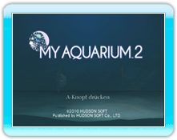
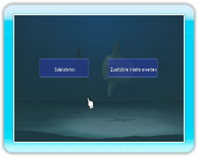

11 |
Bildschirmerklärung |
 |
Drücke im Titelbildschirm
Du kannst entweder "Spiel starten" oder "Zusätzliche Inhalte erwerben" auswählen. Wenn du "Spiel starten" auswählst, gelangst du zum Hauptbildschirm. Wenn du "Zusätzliche Inhalte erwerben" auswählst, gelangst du zum Menü für zusätzliche Inhalte.
Hauptmenü anzeigen. Im Hauptmenü kannst du zwischen 8 Aquarien wählen und weitere Aktionen ausführen.
Futter
Aquarium Design Musik
Optionen ● Wähle einen Fisch aus, um in den Ansichtsmodus zu wechseln. ● "Menü schließen" wählen, um das Menü zu verstecken."Zurück" wählen, um das Menü wieder aufzurufen wenn es nicht angezeigt wird. |
 |
 |
 |